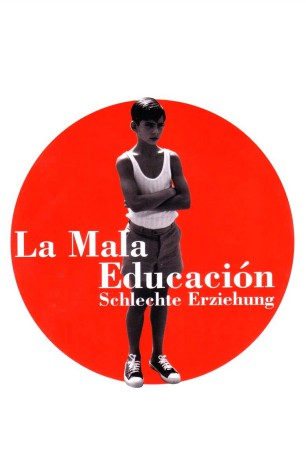

#597 La Mala Educación - Schlechte Erziehung
Alternativ: Bad Education (Englischer Titel)
 
 IMDB-Wertung: 7.5 / 10
IMDB-Wertung: 7.5 / 10  Metascore: 81
Metascore: 81 
Filmemacher Enrique Goded sucht Inspiration für sein nächstes Projekt, als er unerwarteten Besuch bekommt. Ein junger Mann steht vor seiner Tür und stellt sich als Ignacio vor. Jener Ignacio, mit dem Enrique einst auf dem katholischen Internat der Salesianer eine tiefe Freundschaft verband. Aber dann musste Ignacio die Schule verlassen und die Wege der Freunde trennten sich. Mittlerweile hat er den Namen Ángel angenommen und arbeitet als Schauspieler. Und er hat Enrique eine Geschichte mitgebracht, seine eigene Lebensgeschichte, die er von seinem ehemaligen besten Freund verfilmen lassen will. Ángel selbst möchte die Hauptrolle in der Produktion übernehmen. Zunächst ist Enrique begeistert von der Idee, doch die anschließende Recherche für seinen neuen Film gerät immer mehr zur kriminalistischen Wahrheitssuche, reißt alte Wunden auf und bringt schreckliche Ereignisse aus der Vergangenheit ans Tageslicht.
Jahr: 2004
Dauer: 106 Minuten
FSK: 12
Land: Spanien Studio: TOBIS FilmTonspuren:
Untertitel: Deutsch,
Auflösung: 1080p (1920x816) Größe: 6297 MB
Genre: Krimi, Drama
Regisseur: Pedro Almodóvar
Drehbuch: Pedro Almodóvar
Soundtrack: Alberto Iglesias
Darsteller:
 Gael García Bernal als Ángel / Juan / Zahara
Gael García Bernal als Ángel / Juan / Zahara- Fele Martínez als Enrique Goded
 Daniel Giménez Cacho als Padre Manolo
Daniel Giménez Cacho als Padre Manolo Lluís Homar als Sr. Manuel Berenguer
Lluís Homar als Sr. Manuel Berenguer- Francisco Boira als Ignacio
 Javier Cámara als Paca / Paquito
Javier Cámara als Paca / Paquito- Pedro Almodóvar als Pool cleaner , uncredited
- Sara Montiel als Soledad , archive footage, uncredited
- Pau Poch als Niño , uncredited
 Leonor Watling als Mónica , uncredited
Leonor Watling als Mónica , uncredited- Francisco Maestre als Padre José
- Juan Fernández als Martín
- Nacho Pérez als Ignacio
- Raúl García Forneiro als Enrique
- Alberto Ferreiro als Enrique Serrano
- Petra Martínez als Madre
- Sandra als
- Roberto Hoyas als Camarero
 Agustín Almodóvar als Enrique's pool attendant , uncredited
Agustín Almodóvar als Enrique's pool attendant , uncredited- Luis Martín Gil als Motero ochentero , uncredited
Datei: X:\2004(G-M)\La Mala Educación - Schlechte Erziehung (2004, FSK12, 1920x816).mkv seit 12.03.2015
Festplatte: HD 2003-2004-2005(A-F)
 Es gibt insgesamt 41 Filme in der Gruppe '2004(G-M)'
Es gibt insgesamt 41 Filme in der Gruppe '2004(G-M)'